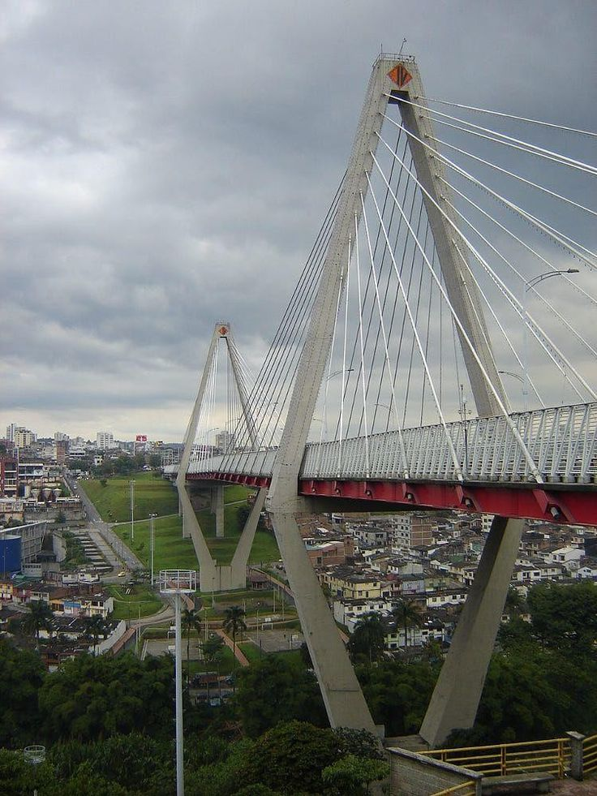

Descubre Risaralda
Risaralda es un departamento ubicado en el corazón del Eje Cafetero, reconocido por su biodiversidad, cultura cafetera y paisajes montañosos que enamoran a los viajeros.
Su capital, Pereira, es una ciudad moderna con un ambiente acogedor, mientras que sus pueblos conservan la tradición cafetera y natural.
Pereira y su modernidad
Pereira es el centro económico y cultural de Risaralda, destacada por sus parques, monumentos y la hospitalidad de su gente. Además, es un excelente punto de partida para recorrer la región.

Santa Rosa de Cabal
Este municipio es famoso por sus termales y cascadas rodeadas de naturaleza. Un lugar ideal para relajarse y disfrutar de aguas minerales en un entorno único.
Viaducto César Gaviria Trujillo
Una de las obras de ingeniería más importantes del país, símbolo de la conexión entre Pereira y Dosquebradas. Un ícono arquitectónico del Eje Cafetero.

Megacable de Pereira
Un moderno sistema de transporte aéreo que conecta la ciudad con zonas urbanas y rurales, brindando una experiencia única en movilidad y turismo.
¡Contáctanos!